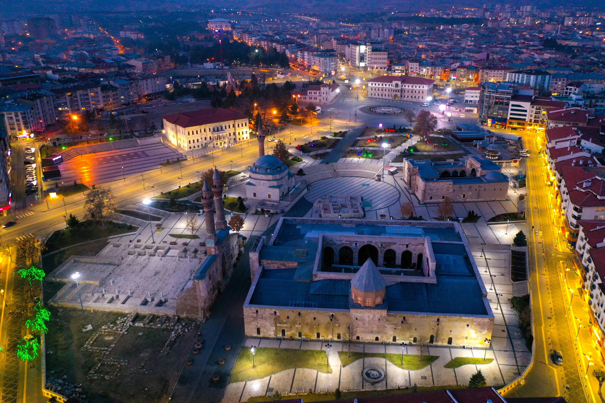

Gurme Sivas Rehberi
Lezzetin ve Kalitenin Sivas'taki Dijital Adresi
Biz Kimiz?
Gurme Sivas, iki Bilgisayar Mühendisliği öğrencisi tarafından, Sivas'ın zengin mutfak kültürünü modern dijital dünyaya taşımak amacıyla başlatılmış bir projedir.
Amacımız
Kullanıcılarımıza sadece bir liste değil, detaylı incelemelerle mekan seçimini kolaylaştıran bir platform sunmayı hedefliyoruz.
